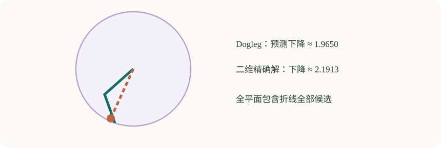

4.1.4 二维子空间最小化：比 Dogleg 折线更大的搜索范围
Dogleg 只考虑两段折线，而整个由梯度和 Newton 校正方向张成的二维平面包含所有 Dogleg 候选。若在该平面的信赖域截面上寻找最优步，预测下降不会比 Dogleg 差。
从折线拓展为整个可行子空间
设 B 对称正定、g≠0。Dogleg 的关键方向来自 g 和 B⁻¹g，其整条路径都落在 span{g,B⁻¹g}。与其只考察一条折线，不如在这个至多二维的子空间中直接最小化二次模型。
如果 g 与 B⁻¹g 共线，子空间实际上只有一维；在高维模型中，通常仍远小于原问题维数。
为什么模型下降不会差于 Dogleg
Dogleg 步是这个二维子空间的可行点，因此将搜索范围扩大到子空间后，最优模型值不可能更高。若 Dogleg 已经达到球内全局最优，则两种方法下降相同；否则二维方法可能进一步改善。
更大的候选范围可能增加每轮计算成本。单步模型下降更大不等于整个算法迭代一定更少，也不保证真实目标函数取得同样改进。

同一个二维模型的对照结果
继续用 g=(2,2)、B=diag(4,1)。在二维空间中 g 与 B⁻¹g 不共线，因此子空间恰好是整个 R²。球内的精确二次模型极小点满足 (B+λI)p=−g，λ≥0；当半径约束激活时 ‖p‖=Δ。
对 Δ=1.3，可令 p(λ)=(−2/(4+λ),−2/(1+λ)) 并用二分确定 λ≈0.631095，得到预测下降约 2.191309，大于相同设置下 Dogleg 的 1.965007。
为什么能对 λ 做二分
对正定 B，λ 增大时 p(λ) 的范数单调缩小。先判断完整 Newton 步是否已在球内；若不在，则找到足够大的 λ 使范数不超过 Δ，再对 λ 区间进行二分。
这一推导之所以简单，是因为例子选取了二维正定对角 B。在高维问题中，二维子空间通常并不等于整个空间；而 B 不定时需要引入负曲率方向和特殊情形处理。
不能忽视不定 Hessian
当 B 不定时，B⁻¹g 不再表示无约束模型的极小点。采用二维子空间仍然可能有用，但应对负特征值进行额外处理，并防止非奇异假设被悄悄破坏。
页面给出的程序只实现正定二维模型的标量乘子搜索，用来验证下界与模型下降，不能被当作通用高维信赖域子问题求解器。
交互：改变参数并观察模型下降
比较 Δ=1.3 与 Δ=2.5：后者是否还需要对 λ 进行二分？
实时模型计算
Python：模型与断言交叉验证
完整代码仅依赖 Python 标准库；可独立运行，包含数值断言。
"""Exact trust-region solution for an SPD two-dimensional model."""
from math import hypot
def norm_at(lam):
return hypot(2/(4+lam),2/(1+lam))
def solve(radius):
if radius<=0:
raise ValueError("radius must be positive")
if norm_at(0)<=radius:
return (-0.5,-2.0),0.0
lo,hi=0.0,1.0
while norm_at(hi)>radius:
hi*=2
for _ in range(90):
mid=(lo+hi)/2
if norm_at(mid)>radius: lo=mid
else: hi=mid
lam=(lo+hi)/2
return (-2/(4+lam),-2/(1+lam)),lam
def reduction(p):
x,y=p
return -(2*x+2*y+0.5*(4*x*x+y*y))
if __name__ == "__main__":
for radius in (0.5,1.3,2.5):
p,lam=solve(radius)
print(radius,lam,p,reduction(p))
assert hypot(*p)<=radius+1e-10 and lam>=0
p,lam=solve(1.3)
assert abs(lam-0.6310945588223069)<1e-8
assert abs(reduction(p)-2.1913087311268886)<1e-8
assert reduction(p)>1.9650065164267754